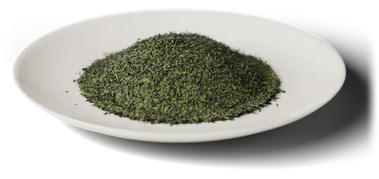
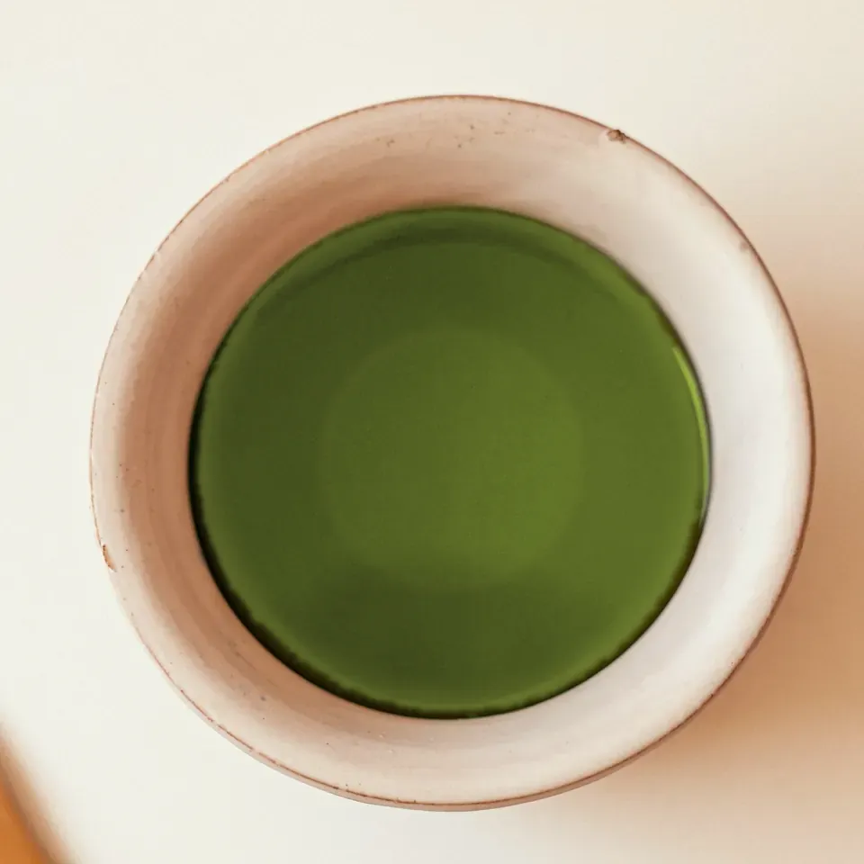

芽のそろうころに
四月の終わり、刈りそろえた畝の面に、淡い黄緑の新芽がそろって伸びてきます。芽の開き具合を見て、一芯三葉ほどの、やわらかいうちに摘みます（一芯三葉は、先の芽と、その下に開いた若い葉三枚のこと）。畝をまたぐ乗用の摘採機で、芽を同じ高さに摘み取ります。
長めに蒸して、揉む
摘んだ葉は、その日のうちに蒸します。蒸すのは、葉の中の酵素の働き（いわゆる発酵）を止めて、緑と香りを残すためです。ふつうの煎茶の蒸しは30〜40秒ほど。霞は約90秒蒸す、牧之原で広まった深蒸しです。長く蒸した葉はやわらかく、揉むうちに細かくなり、黄緑の粉も少し混じります。そのぶん渋みはおだやかで、二煎目まで濃い緑に出ます。

二人分の淹れ方
茶葉は約6g（小さじ山盛り2杯）。湯は二人分で約140ml。深蒸しは、ふつうの煎茶より短く出します。湯は70〜80℃。
- 一煎目は70〜80℃（沸かした湯を湯呑みに移して冷ます）
- 二煎目は約90℃
- 「霞」の一煎目は約40秒
- 二煎目は10秒ほどで、三煎目まで楽しめます
- ふつうの煎茶は1分ほど
湯を量る
沸かした湯を二つの湯呑みに注いで、量を量ります。
冷ます
湯呑みのまましばらく置き、70〜80℃にします。
茶葉を入れる
網の細かい急須に茶葉を入れ、湯を注いでふたをします。
待って、注ぐ
約40秒。二つの湯呑みに少しずつ交互に注ぎ、最後の一滴まで出しきります。
一煎目の水色（すいしょく）

ふつうの煎茶淡く、少し緑がかった山吹色。底まで透けて見えます
深蒸しの「霞」濃い緑で、少しにごります。細かい葉が湯に出るためです
濃い緑の水色に、とろりとした甘み。香りは、火入れ（仕上げに火で乾かして、香りを立てること）の香ばしさと、若葉の香りです。
- 甘み霞は5段の4、ふつうの煎茶は5段の3
- 渋み霞は5段の2、ふつうの煎茶は5段の3
- 濃さ霞は5段の4、ふつうの煎茶は5段の2
濃いめが好きな方、渋みが苦手な方に。
80g茶筒入り
80gお試し用
25g
一番摘み「霞」
茶筒入り（80g） 〇〇円
2026年産の一番茶です。二人分の淹れ方なら約13回分。中はアルミの袋入りで、開けたら袋の口を閉じて茶筒に入れ、ひと月ほどで飲みきるのがおすすめです。茶筒が手元にある方には同じ80gの詰め替え用を、はじめての方にはお試し用（25g、約4回分）を用意しています。
霧和茶園のこと
牧之原の台地に、約4ヘクタールの畑があります。秋に周りの草地でススキなどを刈り、冬のうちに畝の間へ敷きます。土の乾きと雑草を抑える、静岡に伝わる茶草場（ちゃぐさば）農法です。
摘んだ芽は、茶園の小さな工場で、蒸しから仕上げの火入れまで行います。三代目の園主、霧和正之は、蒸す時間をその年の葉の厚みで少しずつ変えていて、「濃く出るお茶なので、湯は少しぬるめから試してみてください」と話します。
この茶について
深蒸し煎茶
一括表示
- 名称
- 煎茶
- 原材料名
- 緑茶（静岡県産）
- 内容量
- 80g（茶筒入り・詰め替え用）／
25g（お試し用） - 賞味期限
- 製造日から12か月（年月日は袋の裏面に記載）
- 保存方法
- 高温・多湿・直射日光を避け、移り香にご注意ください。開封後はお早めにお召し上がりください。
- 製造者
- 霧和茶園
静岡県牧之原市〇〇 1-2-3
- 産地
- 自園の茶葉のみ（牧之原市）
- 品種
- やぶきた
- 摘んだ時期
- 2026年4月下旬〜5月上旬（一番茶）
- 蒸し
- 深蒸し（約90秒）
- 香り
- 火入れの香ばしさと、若葉の香り
- 育て方
- 茶草場農法
- 冷やすとき
- 開ける前なら冷蔵庫に入れられます。冷やした物は、室温に戻してから開けてください。
ご購入方法
いま、2026年産の霞（一番茶）を通販と売店でお求めいただけます。10月下旬からは蔵出しの便も受け付けています。
通販で
見本のため、ほかのページは開きません
送料は全国一律〇〇円、〇〇円以上のご注文で無料です。お試し用だけのご注文は、郵便受けへのお届け（送料〇〇円）。代金引換は使えません。
支払いは、クレジットカード・代金引換・コンビニ後払い。ご注文から2〜3日で発送し、お届けの時点で賞味期限まで6か月以上あるものをお送りします。電話（平日9〜17時）でも注文を承ります（見本）。
贈り物に
- 箱：茶筒が1本か2本入る、和紙を貼った紙の箱
- のし：表書き（御礼・内祝など）と名入れを承ります
- 2本入り：茶筒入りを2本、または茶筒入りと詰め替え用
- 届け先：ご注文の方と別の届け先へ、何か所でも分けて送れます（1か所ごとに送料）
茶園の売店で
牧之原市〇〇、茶園の中の売店です。営業 〇曜〜〇曜 〇時〜〇時、試飲は土日（5〜6月は新茶）。車は5台まで止められます。
季節の定期便（年3回）
5月は霞の新茶、7月は霧和茶園の水出し（霞と同じ畑の茶葉）、10月は霞の蔵出しを、1回80gずつお届けします。1回 〇〇円と送料。休止・解約は、次の便の10日前までに電話かメールでご連絡ください。
蔵出しは、春に摘んで茶園の冷蔵庫で夏を越した一番茶です。園主は「秋のほうが、二煎目まで甘く出る」と言います。
- 届くまで
- 発送の翌日から2日ほど（北海道・沖縄・離島は1〜2日多く）
- 返品
- 食品のため、返品は品物に傷みがあったときの交換のみ承ります
- 問い合わせ
- 電話 000-0000-0000（平日9〜17時）、メール info@example.jp